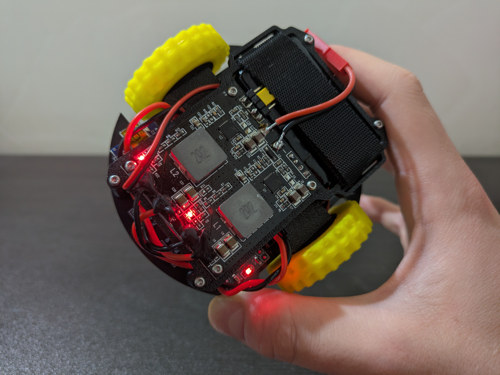
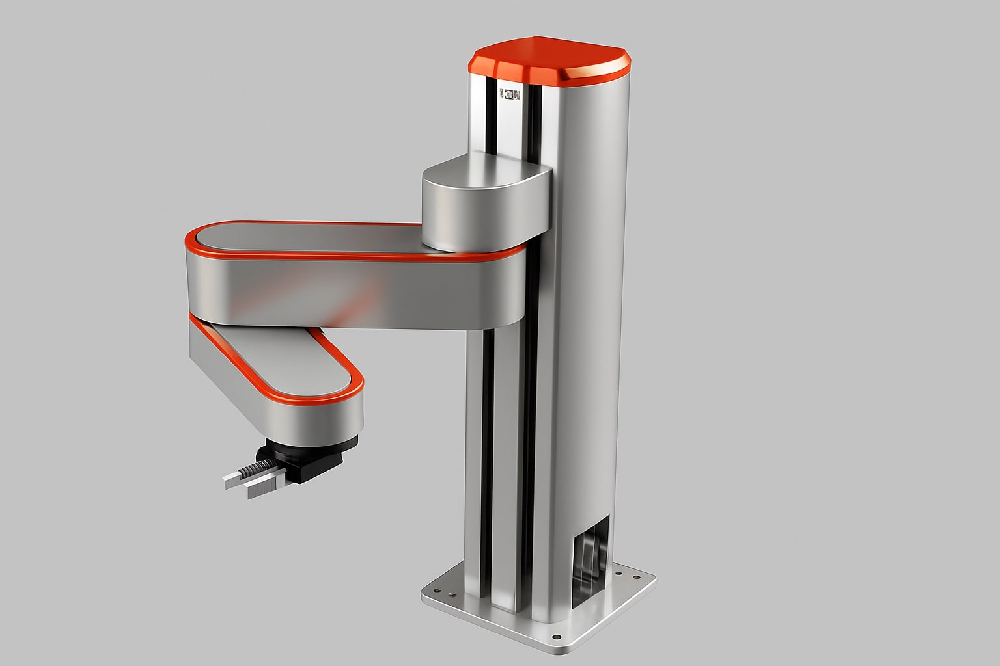

All Projects
A collection of my work in robotics, artificial intelligence, and mechanical design. All my projects are completely open source, designed to be easily replicated using off-the-shelf hardware and without the need for specialized machines. I believe this approach is important to democratize robotics.

Differential Drive Robot
I wanted to deeply understand key concepts in mobile robotics and see how they translate into practice. Building a differential drive robot proved invaluable for this. I explored closed-loop RPM control for motion regulation and a two-layer hardware architecture designed to coordinate low-frequency heavy computations with low-level near-real-time motor control and sensor readings. The project was also highly educational in terms of construction, covering component selection, 3D printing, and PCB design.

SCARA
Building a robot is truly the best ways to really understand robotics concepts. Studying how to derive the inverse kinematics, plan trajectories, defining a timing law and so on I remember asking myself: how do this stuff actually work in real life? Now that we have all the theory set up, how do we actually make the robot move and do what we want? This is the reason why I started developing my SCARA. I kept things simple from a control point of view (no fancy hardware) and this, together with a careful choice of mechanical components (low cost and off-the-shelf parts), resulted in the design of a low-cost, affordable, open-source desktop robot arm thought for people who, like me, want to get their hands dirty.

Hexapod